Committee Meeting
6/5/23
Aims
- A new method for joint gene set enrichment analysis (GSEA)
- Joint enrichment models for covariate moderated FDR.
- Apply joint enrichment models to increase power in single cell eQTL studies.
Theme: variable selection in non-Gaussian models
Aim 0
Develop general approaches for applying SuSiE to a wide class of non-Gaussian models.
- Need good version of logistic SuSiE (and multinomial SuSiE) for GSEA and covariate moderated FDR application (Aim 1 and 2)
- We identified serious limitations in our old approach
- Two new approaches, both extend beyond the logistic case
SuSiE Basics
Sum of single effects regression (SuSiE)
\({\bf y} \in \mathbb R^n\), \(X \in \mathbb R^{n \times p}\)
Sum of single effects: there are at most \(L\) non-zero effects
\[\begin{align} {\bf y} &\sim N(X\beta, {\bf I}_n \sigma^2) \\ \beta &= \sum_{l=1}^L b_l \gamma_l \\ b_l &\sim N(0, \sigma^2_0) \\ \gamma_l &\sim \text{Multinomial}(1, \pi) \end{align}\]
What makes SuSiE work?
We will quickly review variational inference for SuSiE.
Two key ingredients:
- Variational approximation \(q(\beta) = \prod_l q(\beta_l)\)
- Gaussian likelihood reduces coordinate updates to solving a SER
Single Effect Regression (SER)
Model
Single effect regression assumes there is exactly one non-zero effect.
\({\bf y} \in \mathbb R^n\), \(X \in \mathbb R^{n \times p}\) \[ \begin{aligned} {\bf y} &\sim N(X\beta, {\bf I}_p \sigma^2_0) \\ \beta &= b \gamma \\ b &\sim N(0, \sigma^2_0)\\ \gamma &\sim \text{Multinomial}(1, \pi) \end{aligned} \]
Inference is easy
Compute the posterior for \(j = 1,\dots , p\) separate univariate regression \[p(b | X, {\bf y}, \gamma_j = 1)\]
Compute posterior inclusion probabilities
\[ p(\gamma_j = 1 | {\bf y}, X) \propto BF_j \pi_j \]
\[ BF_j = \frac{p({\bf y} | X, \gamma_j=1 )}{p({\bf y} | \beta=0)} \]
Variational inference
Inference as an optimization problem:
\[\begin{align} p(\beta | {\bf y}, X) = \arg \max_q F(q), \quad F(q) := \mathbb E_q \left[ \log p ({\bf y} | X, \beta) \right] - KL[q || p] \end{align}\]
\[\begin{align} F(q) &= \mathbb E_q \left[ \log p ({\bf y} | X, \beta) \right] - KL[q || p] \\ &= \mathbb E_q \left[ \log p ({\bf y}, \beta | X) \right] + H(q) \\ &= \left(\mathbb E_q \left[ \log p ({\bf y}, \beta | X) - Z \right] + H(q) \right) + Z \\ &= - KL[q || p_{post}] + Z \end{align}\]
We’ll write the variational objective for SER \(F_{SER}(q; {\bf y}, X, \sigma_0)\)
SuSiE: model
\[ \begin{aligned} y &\sim N(X\beta, \sigma^2_0) \\ \beta &= \sum_l b_l \gamma_l \\ b_l &\sim N(0, \sigma^2_0)\\ \gamma_l &\sim \text{Multinomial}(1, \pi) \end{aligned} \]
SuSiE: variational approximation
Restrict \(q\) to some family \(\mathcal Q\)
\[\begin{align} q^*(\beta) = \arg \max_{q \in \mathcal Q} F(q) \end{align}\]
SuSiE uses \(\mathcal Q = \{q : q(\beta) = \prod_l q_l(\beta_l)\}\)
\[ F_{SuSiE}(q; X, {\bf y}) = \mathbb E_{q} \left[ -\frac{1}{2\sigma^2}||{\bf y} - {\bf X} \beta_{-l} - X\beta_l||^2_2) \right] + KL[q || p_{SuSiE}] \]
SuSiE: coordinate ascent (IBSS)
Define the residual \({\bf r}_l = {\bf y} - X\beta_{-l}\)
\[ \begin{aligned} F_{SuSiE}(q_l; q_{-l}, X, {\bf y}) &= \mathbb E_{q_l} \left[ \mathbb E_{q_{-l}} \left[ -\frac{1}{2\sigma^2}||{\bf y} - {\bf X} \beta_{-l} - X\beta_l||^2_2) \right] \right] - KL[q || p] \\ &= \mathbb E_{q_l} \left[ \mathbb E_{q_{-l}} \left[ -\frac{1}{2\sigma^2}|| {\bf r}_l - X\beta_l||^2_2) \right] \right] - KL[q_l || p_l] + C_1 \\ &= \mathbb E_{q_l} \left[ \color{blue}{ -\frac{1}{2\sigma^2} \left(|| \mathbb E_{q_{-l}} {\bf r}_l- X\beta_l||^2_2 + \mathbb V ||r_l||^2_2 \right)} \right] - KL[q_l || p_l] + C_1\\ &= \mathbb E_{q_l} \left[ -\frac{1}{2\sigma^2} || \mathbb E_{q_{-l}} {\bf r}_l- X\beta_l||^2_2] \right] - KL[q_l || p_l] + C_2 \\ &= F_{SER}(q_l; X, \mathbb E_{q{-l}}{\bf r}_l) + C_2 \end{aligned} \]
Key: coordinate updates in \(\mathcal Q\) reduce to solving an SER
Generalizing SuSiE
Simplification depends on properties of the Gaussian log likelihood
\[ \begin{aligned} \log p(y | {\bf x}, \beta) = y ({\bf x}^T \beta) - \log(1 + \exp({\bf x}^T \beta)) \end{aligned} \]
No simplification when taking expectations over \(q_{-l}\)
\[ \begin{aligned} \mathbb E_{q_{-l}} \left[ \log p(y | {\bf x}, \beta) \right] = y ({\bf x}^T \beta_l + {\bf x}^T \bar \beta_{-l}) - \color{red}{\mathbb E_{q_{-l}}\left[\log(1 + \exp({\bf x}^T \beta)) \right]} \end{aligned} \]
Jaakkola-Jordan bound
Idea: construct local approximation to the log-likelihood. Tune the approximation to be tight near the posterior mode.
For all \(\xi \in \mathbb R\), \(\psi = {\bf x}^T \beta\)
\[ \log p(y | \psi) \geq \frac{1}{2} \log \sigma(\xi) + \frac{1}{2} \left((2y -1) \psi - \xi\right) - \frac{1}{4\xi}\tanh(\frac{\xi}{2}) (\psi^2 - \xi^2) \]
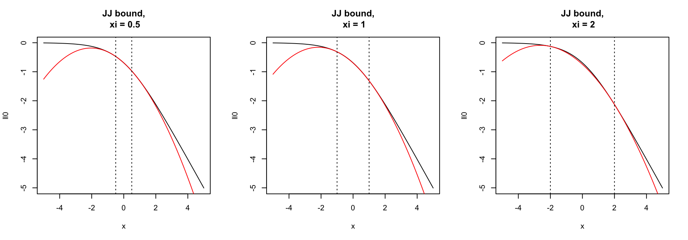
JJ Bound is bad for variable selection
Naive application of JJ bound to SER uses very loose ELBO for most variables
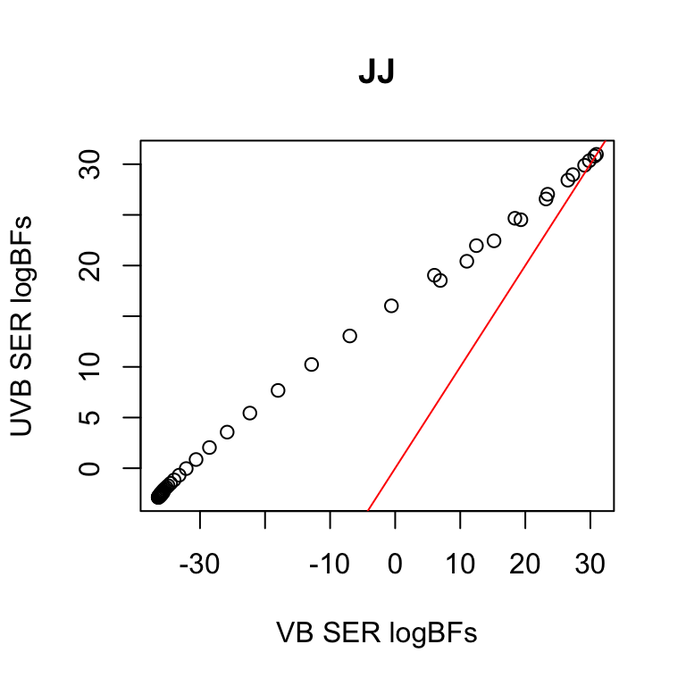
| method | coverage |
|---|---|
| uvb_ser | 0.945 |
| vb_ser | 0.845 |
Simulations: VB logistic SuSiE \(L=5\)
Varying effect sizes, correlation structure, and num. of non-zero effects
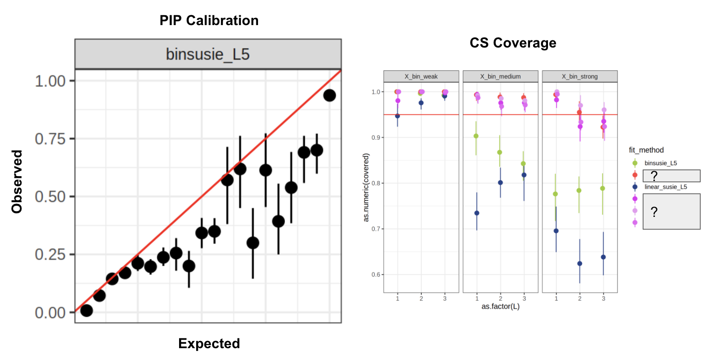Generalized IBSS
Overview
- Heuristic approach for applying SuSiE to non-Gaussian models
- Idea: apply IBSS, using expected predictions as fixed offsets
\[\begin{align} F_{SuSiE}(q) &= \mathbb E_q[\log p({\bf y} | X, \beta_l, \beta_{-l})] - \sum_l KL[q_l || p_l] \\ &= \mathbb E_{q_l}[ \mathbb E_{q_{-l}}[\log p({\bf y} | X, \beta_l, \beta_{-l})]] - \sum_l KL[q_l || p_l] + C_1 \\ &\color{purple}{\approx \mathbb E_{q_l}[\log p({\bf y} | X, \beta_l, \bar \beta_{-l})] - KL[q_l || p_l] + C_2} \\ &= F_{SER}(q_l; {\bf y}, X, \bar \beta_{-l}) + C_2 \end{align}\]
Why should this work?
\[\begin{align} F_{SuSiE}(q) &= \mathbb E_q[\log p({\bf y} | X, \beta_l, \beta_{-l})] - \sum_l KL[q_l || p_l] \\ &\color{purple}{\approx \mathbb E_{q_l}[\log p({\bf y} | X, \beta_l, \bar \beta_{-l})] - KL[q_l || p_l] + C_2} \\ \end{align}\]
- If \(\log p( {\bf y} | X, \beta)\) is quadratic in \(\beta\) (Gaussian) there \(\color{purple}\approx\) is \(=\)
- Informally, approximation is good if \(\log p( {\bf y} | X, \beta)\) is well approximated by a quadratic function in \(\beta\).
- Really we care about \(\psi = X\beta\)
Algorithm: Single effect regression
Require a function \(G\) which computes the BF and posterior mean of a Bayesian univariate regression
\[\begin{align} {\bf y} \sim 1 + {\bf x} + {\bf o} \\ b \sim N(0, \sigma^2) \end{align}\]
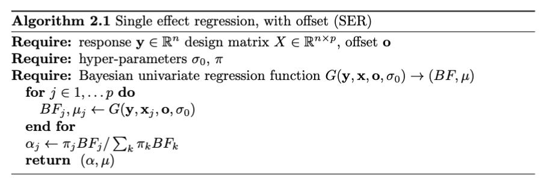
Algorithm: GIBSS

Simulations: logistic-GIBSS \(L=5\)
Much better performance compared to direct VB approach
Advantage and limitations
Advantages
- Seems to work well!
- Highly modular: just need to implement the univariate regression
Disadvantages
- Heuristic– not optimizing a clear objective function
- Does not properly account for uncertainty in \(\beta_{-l}\), only uses posterior mean
Opportunities
- Can we analyze the approximation error?
- Can we make guarantees on GIBSS performance asymptotically?
Status
- Implemented in
logisticsusiepackage github rep - Yunqi was able to use GIBSS code to help with survival SuSiE project
- Possibly implement GIBSS for GLMs in
susieRpackage
A correction to Wakefield’s ABF
Overview
- GIBSS requires computing the BF and posterior mean for each variable
- Standard statistical software for computing MLE
- For large sample sizes, we can leverage asymptotic normality of the MLE to approximate posterior mean and BF.
Posterior mean
\[ \begin{aligned} \hat \beta | \beta, s^2 &\sim N(\beta, s^2) \\ \beta &\sim N(0, \sigma^2) \end{aligned} \]
\[ \beta | \hat \beta, s^2 \sim N \left( \frac{\sigma^2}{s^2 + \sigma^2} \hat\beta, \left(\frac{1}{s^2} + \frac{1}{\sigma^2}\right)^{-1} \right) \]
Approximating the the BF
\[BF = \int \color{red}{\frac{ p(\mathcal {\bf y} | {\bf x}, \beta)}{p({\bf y} | \beta = 0)}} N(\beta | 0, \sigma^2) d\beta\]
Approximate the likelihood ratio in a way that’s easy to integrate
\[ LR(\beta_1, \beta_2) = \frac{p(\mathcal {\bf y} | {\bf x}, \beta)}{p({\bf y} | \beta=0)} \]
Wakefields asymptotic BF
Asymptotically, \(\hat \beta | \beta, s^2 \sim N(\beta, s^2)\). Then
\[ LR(\beta, 0) = \frac{p(y | \hat\beta, \beta) p(\hat\beta | \beta)}{p(y | \hat\beta, \beta = 0) p(\hat\beta | \beta = 0)} \approx \color{red}{\frac{p(y | \hat\beta)}{p(y | \hat\beta)}} \frac{p(\hat\beta | \beta)}{ p(\hat\beta | \beta = 0)} \approx \frac{N(\hat\beta| \beta, s^2)}{N(\hat\beta| 0, s^2)} = \widehat{LR}_{ABF}(\beta, 0). \]
Integrating over the prior gives Wakefield’s asymptotic Bayes Factor (ABF)
\[ ABF = \int \widehat{LR}_{ABF}(\beta, 0) N(\beta | 0, \sigma^2_0) d\beta = \frac{N(\hat\beta | 0, s^2 + \sigma^2_0)}{N(\hat\beta | 0, s^2)} \]
A problem with ABF
- The asymptotic approximation may not be a good in the tails
- An issue for \(\hat\beta/s >> 0\)
Adjusting the ABF
Idea: use the asymptotic approximation where it is good
\[ \begin{aligned} LR(\beta, 0) &= LR(\beta, \hat\beta) LR(\hat\beta, 0) \\ &\approx \widehat{LR}_{ABF}(\beta, \hat\beta)LR(\hat\beta, 0) \\ &= \widehat{LR}_{Lap}(\hat\beta, 0) \end{aligned} \]
Corrected ABF/Laplace approximation
- Requires knowledge of the LR of the MLE against the null.
- Can dramatically improve approximation of the BF

Comparison of logBF
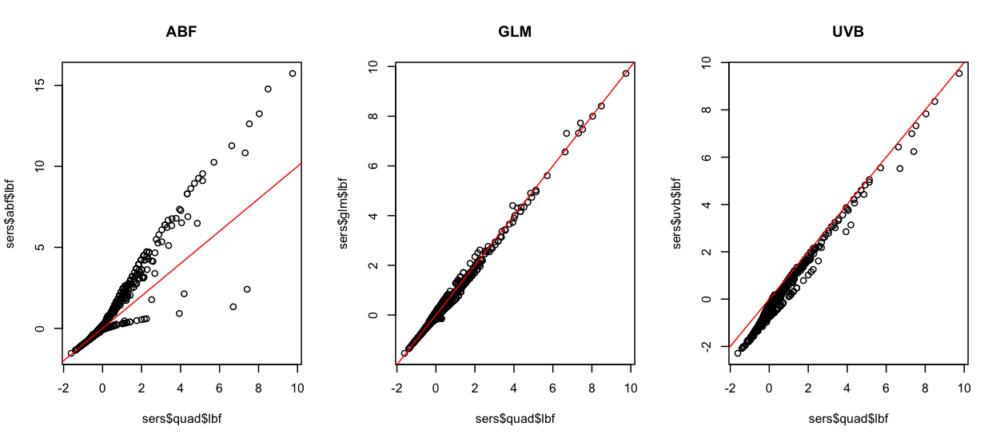Comparison of logBF
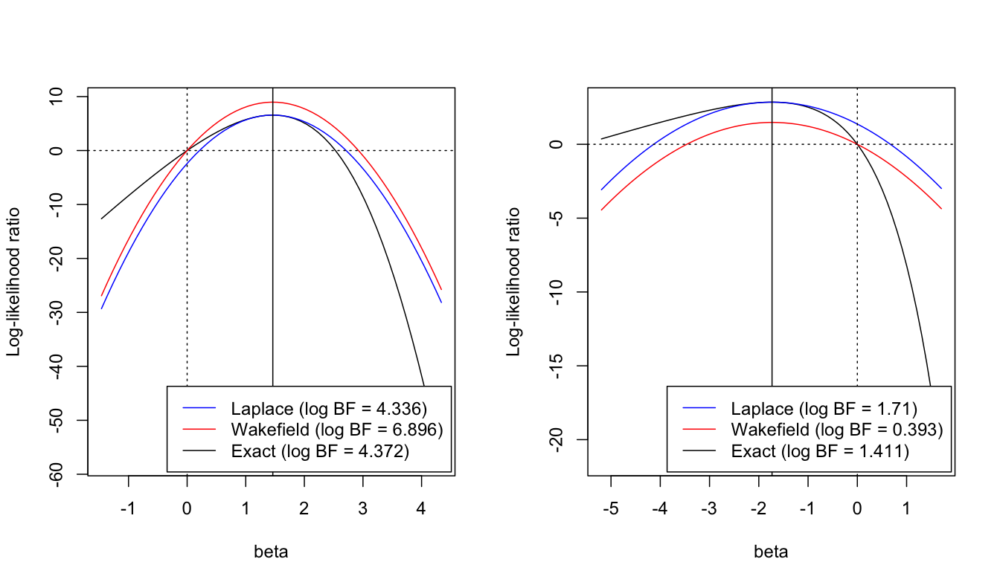ABF Correction reorders PIPs
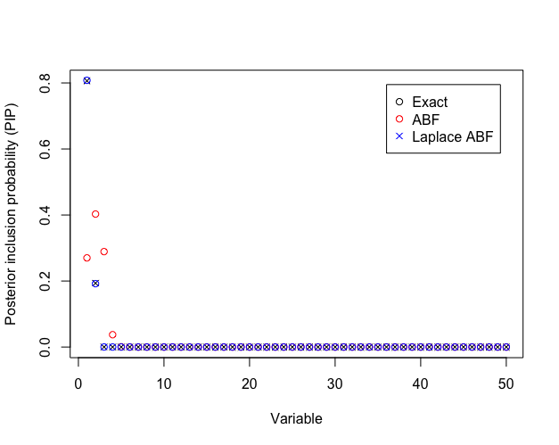Laplace approximation
For some non-negative function \(f: \mathbb R \rightarrow \mathbb R^+\), want to compute the integral
\[I = \int f(x) dx,\]
Define \(h(x) = \log f(x)\), expand around the maximizer of \(h\), \(x^*\)
\[\hat h (x) = h(x^*) + \frac{1}{2} h^{''}(x^*)(x-x^*)^2\]
Approximate with the Gaussian integral
\[ \hat I = \int \exp{\hat h(x))} dx = \exp{\hat h(x^*)} \left(-\frac{2\pi}{h^{''}(x^*)}\right)^{1/2}\]
Takeaways
Laplace approximation of the BF better than ABF for variable selection
Addition information available from standard statistical software for GLMs
Poor performance of ABF raises concerns about using SuSiE-RSS for summary statistics from non-Gaussian models
GIBSS + asymptotic approximation looks like a good recipe for GLMs
Polynomial SuSiE
Notation
\(p\) an \(M\) degree polynomial
\({\bf a} = (a_0, \dots, a_M)\) unique coefficients representing \(p\) in the monomial basis \((1, x, \dots, x^M)\)
\[\phi_{\bf a}(x) = \sum_{k=0}^M a_k x^k = p(x)\]
Polynomial approximation: inference
- Approximate the log-likelihood of each observation as a polynomial in linear prediction, \(\psi\). \({\bf a}_i\) s.t. \(\log p(y_i | \psi) \approx \phi_{{\bf a}_i}(\psi)\)
- Approximate the log prior density. \(\rho\) s.t. \(\log p(\beta) \approx \phi_{\rho}\)
- Transform \({\bf a}_i\) so they are a function of \(\beta\). \({\bf d}_i\)
- \(\log p(y, \beta) \approx \phi_{\bf f}(\beta), \quad {\bf f} := \sum {\bf d_i} + \rho\)
Polynomial exponential family
With \({\bf a} \in \mathbb R^M\), and \(T(x) = (x, \dots, x^M)\)
\[ f(x; {\bf a}) \propto \exp\{\langle {\bf a}, T(x) \rangle\} \]
- Intercept = normalizing constant. \(a_0 = - \log \int \exp\{\langle {\bf a}, T(x) \rangle\} dx\)
- Hard integral, approximate or handle numerically
Operations: polynomial rescaling
\[\phi_{\bf a}(cx) = \phi_{{\bf d}({\bf a}, c)}(x)\]
\[ \begin{aligned} \sum_m a_m(c x)^m &= \sum_m (a_m c^m) x^m \\ &= \sum_m {\bf d}({\bf a}, c)_m x^m, \quad {\bf d}({\bf a}, c)_m := a_mc^m \end{aligned} \]
Polynomial approximate univariate regression
For each \(i\), we have \({\bf a}_i\) such that \(\log p(y_i | \psi) \approx \phi_{{\bf a}_i}(\psi)\)
Represent/approximate the log-prior density with a polynomial with coefficients \(\rho\), i.e. \(\log p(\beta) \approx \phi_\rho(\beta)\)
\[\begin{align} \log p({\bf y}, \beta | {\bf x}, \beta) &\approx \sum_i \phi_{{\bf a}_i}(x_i \beta) + \phi_{\rho}(\beta)\\ &= \sum_i \phi_{{\bf d}({\bf a}_i, x_i)}(\beta) + \phi_{\rho}(\beta) \\ &= \phi_{{\bf f}(A, {\bf x}, \rho)}(\beta), \quad {\bf f}(A, {\bf x}, \rho) = \sum_i {\bf d}({\bf a}_i, x_i) + \rho \end{align}\]
Example: univariate regression
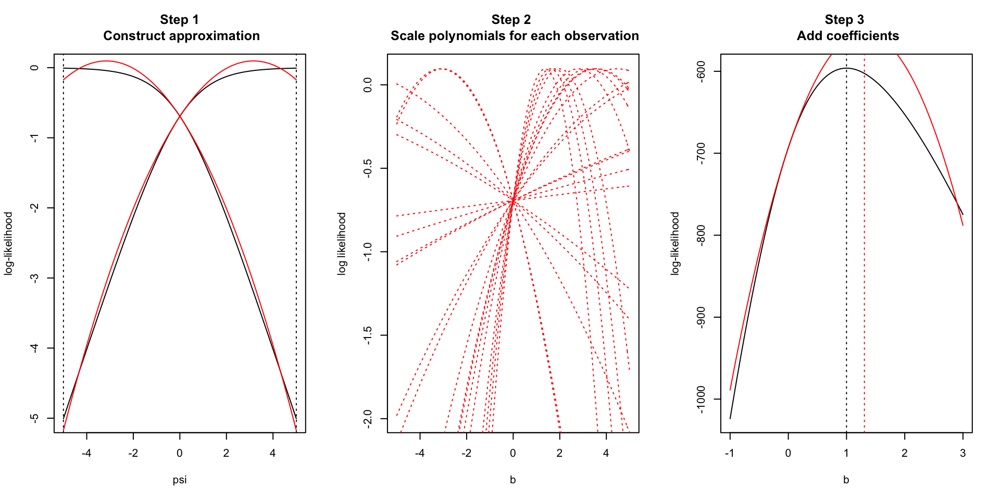Increasing degree increases accuracy
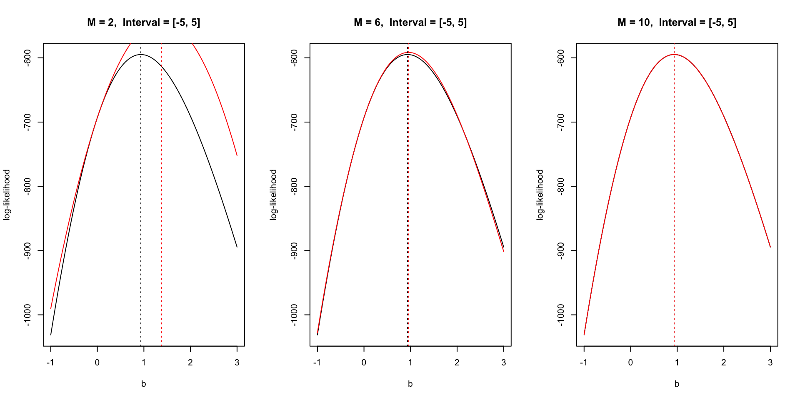Polynomial SER
\(A = \{{\bf a}_i \}_{i=1}^n\), base coefficients
\[ \hat F_{SER}(q; A, X, \sigma^2_0) = \mathbb E_q\left[ \sum \phi_{{\bf a}_i}(\psi_i)]\right] - KL[q || p] \approx F_{SER}(q; {\bf y}, X, \sigma^2_0). \]
- Approximate the SER by exactly optimizing an approximation of the ELBO
- Each univariate regression is easy to compute from the base coefficient \(A\)
Operations: polynomial shift
For SuSiE: \(\psi = \psi_l + \psi_{-l}\).
\[\phi_{\bf a}(x + y) = \phi_{{\bf b}({\bf a}, y)}(x)\]
Expand and collect terms
\[\begin{align} \phi_{\bf a}(x + y) &= \sum_{m=0}^M a_m(x + y)^m = \sum_{m=0}^M a_m \sum_{k=0}^m {m \choose k} x^k y^{m-k} \\ &= \sum_{k=0}^M \left(\sum_{m=k}^M a_m {m \choose k}y^{m-k} \right) x^k \\ &= \sum_{k=0}^M {\bf b}({\bf a}, y)_k x^k, \quad {\bf b}({\bf a}, y)_k := \left(\sum_{m=k}^M a_m {m \choose k}y^{m-k} \right) \end{align}\]
Can be written as a matrix multiplication \[ {\bf b}({\bf a}, y) = M(y) {\bf a}, \quad M_{ij} = {j \choose i} y^{j -i}\; \forall j \geq i, 0 \text{ otherwise} \]
For random \(y \sim p\), expected polynomial shift
\[ {\bf c}({\bf a}, p) := \mathbb E_p[{\bf b}({\bf a}, y)] = \mathcal M(p){\bf a}, \quad \mathcal M(p) := \mathbb E_p[M(y)] \]
Polynomial shift for SuSiE
Each observation must be transformed into a function of \(\psi_{l}\)
Start with \({\bf a}^* = \mathcal M(q){\bf a}\)
- “Undo” polynomial shift \({\bf a}^{(l)} = M(q_l)^{-1} {\bf a}^*\)
- Update \(q_{l, new} \leftarrow \arg\max_{q_l}\hat F_{SER}(q_l; A^{(l)}, X, \sigma^2_0)\)
- \({\bf a}^*_{new} \leftarrow \mathcal M(q_{l, new}) {\bf a}^{(l)}\)
- The SER coefficients \({\bf a}^{(l)}\) analogous to expected residuals in IBSS
- \(\mathcal M(q_l)\) requires \(\mathbb E_{q_l}\left[\psi^k\right], \; k = 1, \dots M\)
Coordinate ascent in an variational objective
\[\begin{align} \hat F_{SuSiE}(q_l; q_{-l}, A, X, \sigma^2_0) &= \mathbb E_{q_l} \mathbb E_{q_{-l}} \sum_i \phi_{{\bf a}_i}(\psi_l + \psi_{-l}) + KL[q|| p] \\ &= \mathbb E_{q_l} \mathbb E_{q_{-l}} \sum_i \phi_{{\bf c}({\bf a}_i, \psi_{-l})}(\psi_l) + KL[q_l|| p_l] + C \\ &= \mathbb E_{q_l} \sum_i \phi_{{\bf d}({\bf a}_i,q_{-l})}(\psi_l) + KL[q_l|| p_l] + C \\ &= \hat F_{SER} (q_l; D, X, \sigma^2_0) + C, \quad D = \{{\bf d}({\bf a}_i,q_{-l})\}_{i=1}^n \end{align}\]
Polynomial interpolation
\(f : \mathbb R \rightarrow \mathbb R\)
\(n+1\) distinct points \(x_0 < \dots < x_{n}\)
There exists a unique \(p \in P_n\) such that \(p\) interpolates \(f\) at \(x_0, \dots, x_n\).
\[\begin{align} p(x) = \sum_{i=0}^n f(x_i) L_{n, i}(x), \quad L_{n, i}(x) = \prod_{k \neq i} \frac{x - x_k}{x_i - x_k} \end{align}\]

Chebyshev interpolation
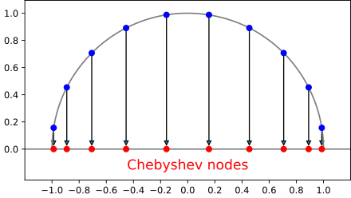
Interpolation at the zeros of Chebyshev polynomials \(x_k = \cos \left(\frac{2k-1}{2M}\pi \right), k = 1, \dots, M\)
Fast interpolation via re-scaled DFT of \(f(x_1), \dots, f(x_M)\)
Approximately minimizes \(||f - \hat f||_{\infty}\)
Chebyshev interpolation: GLM likelihoods
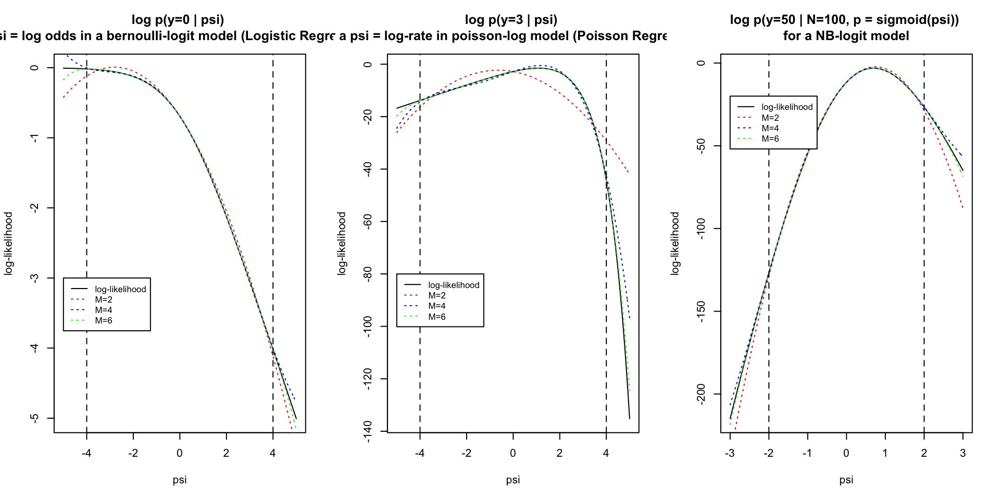Simulations
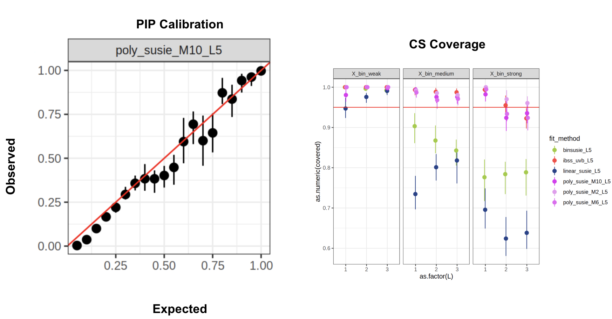Caveats: designing good polynomial approximations
- Require the leading degree of the polynomial approximation to be negative so that \(\int \exp \phi_{\bf a} < \infty\)
- Approximation interval should contain the prediction for each observation with high probability for the approximation to be accurate \(\mathbb P( \beta^T {\bf x}_i \in [L, R] | {\bf y}, X) \approx 1\)
- Quality of the approximation (generally) decreases as approximation interval becomes wider
Opportunities
- Is there a faster way to perform “expected polynomial shift” operation?
- Other computationally convenient ways to approximation \(\log p(y | \psi)\)?